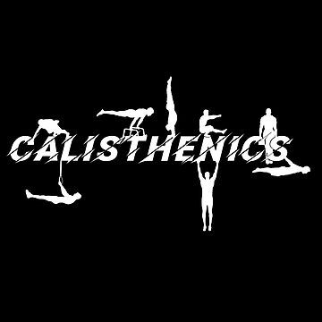

What is calisthenics?
Calisthenics is a style of strength training that uses your own bodyweight as resistance. Push-ups, pull-ups, squats and dips are all calisthenics, and you can do them at the gym, at a park or at home.
Why I started
I got into calisthenics because I was weak at bodyweight training. When I first started, I couldn't do a single pull-up or a single dip. My push-ups were weak too, and my form was sloppy: my hips sagged, my elbows flared out and I rushed through every rep.
Instead of giving up, I started training more often and used resistance bands to help me. A band looped over the pull-up bar or the dip station takes away some of your bodyweight, so I could finally do full reps with good form. As I got stronger, I switched to lighter and lighter bands until I could do the movements on my own. My push-ups got cleaner and stronger at the same time.
The best of both worlds
I don't only do calisthenics. I also lift weights at the gym to build strength and hypertrophy (muscle size). The two styles help each other:
- Calisthenics builds body control, balance, mobility and the ability to move my own bodyweight well.
- Weightlifting lets me add exact amounts of weight, so I can keep making my muscles bigger and stronger over time.
- Weighted calisthenics connects the two. Adding weight to dips and pull-ups built my overall strength so much that my big compound lifts – bench press, deadlift and squat – went up too, even without extra time spent on them.
Combining them gives me the best of both worlds: I'm strong under a barbell and strong on the bar. This site collects the exercises I use, the weekly routine I follow, and a log of how my progress has gone.
Why train this way?
Free & flexible
No equipment is required to begin. A floor, a sturdy bar and a bit of space are enough.
Full-body strength
Most movements train several muscle groups at once, which builds balanced, functional strength.
Scales with you
Every exercise has easier and harder versions, so beginners and advanced athletes can both progress.
Explore the site
- Exercises – the core movements and how to progress them.
- Routines – my push, pull, legs, rest cycle, which you can download.
- My Journey – from zero pull-ups to muscle-ups and weighted lifts.